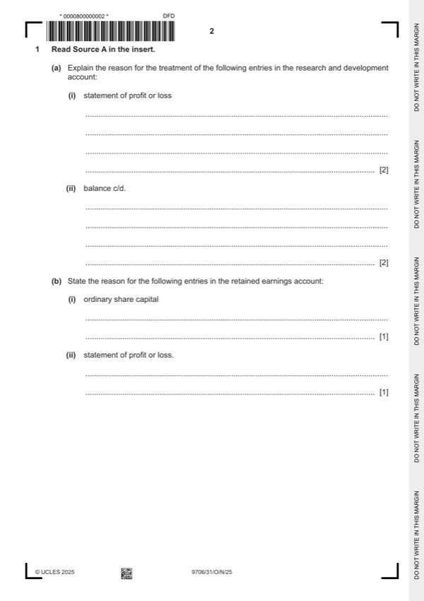

Question 1

Original paper page 2
Part 1(a)(i) — solution
Explain the reason for the treatment of the following entries in the 2
research and development account:
statement of profit or loss
This is the amount treated as revenue expenditure/written off as an expense
(1) plus reason such as: because it is pure research/costs for an item which
cannot be shown to be capable of being sold / gives no future benefit (1).
Mark points
- Include the ideas shown in the solution above.
Part 1(a)(ii) — solution
Explain the reason for the treatment of the following entries in the 2
research and development account:
balance c/d.
This is the amount treated as capital expenditure (1) plus reason such as:
because it could be demonstrated to improve the company’s product / gives
future benefit (1).
Mark points
- Include the ideas shown in the solution above.
Part 1(b)(i) — solution
State the reason for the following entries in the retained earnings 1
account:
ordinary share capital
funding all or part of a bonus issue of shares (1)
Mark points
- Include the ideas shown in the solution above.
Part 1(b)(ii) — solution
State the reason for the following entries in the retained earnings 1
account:
statement of profit or loss.
transfer to retained earnings of the loss for the year (1)
Mark points
- Include the ideas shown in the solution above.
Part 1(c) — solution
Complete the following table to show the recoverable amount and any 6
impairment loss for each vehicle.
vehicle carrying recoverable impairment
amount amount loss
$ $ $
A 16 800 15 600 (1) 1 200 (1)
B 24 100 22 400 (1) 1 700 (1)
C 22 800 25 600 (1) 0 (1)
University Press & Assessment 2025 Page 7 of 14
9706/31 Cambridge International AS & A Level – Mark Scheme October/November
PUBLISHED 2025
Mark points
- Include the ideas shown in the solution above.
Part 1(d) — solution
- 2024 in accordance with IAS1
- W1 6 300 + 541 300 = 547 600
Mark points
- 2024 in accordance with IAS1
- W1 6 300 + 541 300 = 547 600
Part 1(e) — solution
Advise the directors whether or not the company should pay a dividend. 5
Justify your answer.
For (Max 2)
Would please shareholders (1)
Bonus issue of shares may not have satisfied shareholders (1)
Would improve reputation of and confidence in the company (1)
If the research and development was a ‘one off’ the company may well return
to profitability in the coming year (1)
Against (Max 2)
Cash may not be available to pay the dividend (1)
If company continues to makes losses there might soon be no distributable
reserves (1) and will not be able to invest in growth (1)
Shareholders have already received a bonus issue (1)
Decision supported with a comment (1)
Accept other valid responses.
University Press & Assessment 2025 Page 9 of 14
9706/31 Cambridge International AS & A Level – Mark Scheme October/November
PUBLISHED 2025
Mark points
- Include the ideas shown in the solution above.